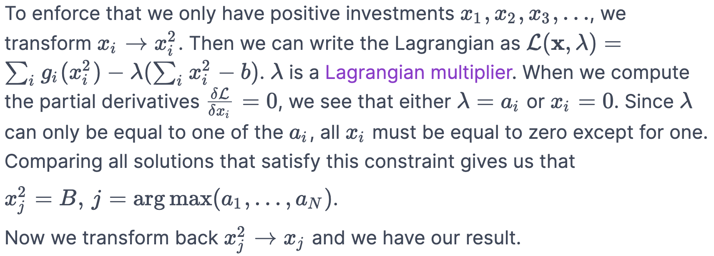
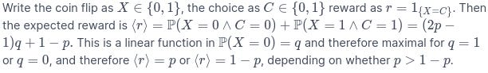

Slightly advanced decision theory 102 Four reasons not to be a (naive) utility maximizerTL;DR Introduction to decision theory with examples from effective altruism. Resulting optimal strategies differ from “naive” utility maximisation, but… |
Updated | ||
|---|---|---|---|
| Author | Jan Kirchner | ||
Hello and welcome to everyone who joined from Hacker News or Marginal Revolution after last week’s post[1]! I’m Jan and I’m trying to have something interesting to say on this Substack every week. Quality and mass appeal can vary. Hope you enjoy <3
[1]
The post got more than 20.000 (pairs of) eyeballs! Gasp!
In high school I learned that there are four fundamental questions in philosophy:
What can I know? (epistemology)
What should I do? (moral philosophy)
What is beauty? (aesthetics)
What? (metaphysics)
Effective altruism is a movement that attempts to link the second question with the first[2][3]: How can I use the things I know to better do the things I should do?
[2]
[3]
Note how “postrats” are focused on questions three and four instead.
This leads to an interesting clash of cultures: people interested in “what can I know?” tend to be rather cerebral[4], while “what should I do?” attracts people that are more… cordial?[5] This mix is often intriguing and sometimes sublime. It’s a young movement and there are many foundational questions that need figuring out. In a [previous post], I promised that I would dig into the foundations and see if everything actually makes sense to me. This post is the first step down that path.
[4]
Or “scoutish”.
[5]
I guess that is the appropriate opposite of cerebral. Less charitable, they can also be calledsoldiers.
So buckle up, I’ll be diving into expected value reasoning and slightly advanced decision theory. In four bite-sized sections that can be enjoyed in sequence or in isolation, I’ll provide theoretical footing for a lot of the things that are already practiced in effective altruism anyway, but that do not follow directly from naively applying expected value reasoning. As mentioned above, I’m partially doing this to satisfy my own need for having a solid theoretical basis for my actions. But beyond that, my hope is also that by articulating these arguments and demonstrating how to use computational toy models to understand complicated dynamics I’m providing useful tools for the community.
But before we can talk about tools, let me set the stage. Feel free to skip this section if you are familiar with the central logic and recommendations for action of effective altruism.
I said in the earlier section that effective altruism combines epistemology with moral philosophy. What does that even mean[6]?
[6]
This is a tough problem in philosophy. David Hume says it’s impossible, see Hume’s Guillotine.
We can make this arbitrarily complicated, but for the sake of the post let us start by picking hedonistic utilitarianism as moral philosophy. Hedonistic utilitarianism prescribes that we ought to take the action that produces the greatest net happiness for all concerned. The word “greatest” suggests that we need to be able to order all actions so that one of them is better than all the other ones. At this point, the Von-Neumann-Morgenstern is usually introduced to argue that under certain “reasonable assumptions” we can get a utility function from an ordering of preferences. The prescription of hedonistic utilitarianism to “produce the greatest net happiness for all concerned” then translates into “choose actions that maximize utility for all concerned”. And figuring out which action that is, turns out to be something that we (sometimes, kind of) can do by looking at the world and figuring out how things work. Thus we arrive in the land of epistemology.
So far, so vague - what does this buy us? It turns out that it is pretty hard to actually apply Von-Neumann-Morgenstern[7], therefore the idea to maximize utility is more like a guiding light than an ultimate law. Reality is often messy and we cannot be sure that the action we take ends up having the effect we think they will have. Even the most promising action can fail - and an unlikely “moonshot” project might still end up working out. This probabilistic component leads us to maximize theexpectedutility instead of just maximizing utility. This gives us some assurance that as long as we keep trying long enough, eventually, we will produce utility.
[7]
And hedonistic utilitarianism has somenasty pathological solutions.
Despite these caveats, a handful of recommendations have emerged for the aspiring effective altruist that have a chance to maximize expected utility:
Are you convinced? I hope not. Here are three points that give me pause:
[8]
Maybe later though… * stares off into the distance *
Let’s see if we can untangle this and see where the discord is coming from.
On the topic of career choice: I have the impression thattoo much importance is assigned to the choice of a career. 80.000 hours writes:
If you want to have a positive impact with your life, your choice of career is probably your best opportunity to do that.
Framing the situation like this makes it sound like a monolithic decision that locks in your future impact. I’m sure this is not the intended message; but from talking to people at the beginning of their careers, this is often the impression I get.
An alternative approach was recently outlined by Holden Karnofsky. Rather than monolithic paths into a career, Holden talks about aptitudes, which “one can build in a wide variety of roles and causes”. This matches my own perspective; I’ve consistently found it more beneficial to collect skills and friends as they present themselves to me, rather than to stubbornly grind towards a fixed goal. I’ve also made it a habit to say “yes” to any interesting opportunity that comes up[9].
[9]
A long time ago (long before I started to obsessively note down sources for things I hear) I heard this terrifying story about how actors in Hollywood never get told that their career is over. At some point, the phone just stops ringing.
So what can I add that’s not already in Holden’s post? A mathematical argument, of course!
Let’s first look at one example of what a monolithic life decision might look like. Imagine you are evaluating several options (from biorisk research to cause X research). Each of them has an expected impact and you compare them to identify the winner:
Since “cause X research” has the highest expected impact, you decide to pick that and drop the rest. In equations, you have opportunities
and you decide to pick the one that has the highest expected value:
While this is fine, and certainly has a higher impact than exclusively focusing on knitting, I believe we can do even better. In particular, the expected value of the maximum is larger than or equal to the maximum of the expected values :
I know this mathematical theorem as the “race model inequality”[10], but I’m sure it is known under different names in different fields. What it cashes out to is the following decision rule: When you have the choice between (ex-ante) picking one thing and getting the result from that thing, or (ex-post) seeing the result from all the things and picking the one you like best, you should always pick the latter (ex-post) option.
[10]
I really hope this particular combination of terms doesn’t get picked up by the search engines.
Or, in less fancy terms,
Instead of only researching Cause X, also keep one foot in AI safety research, have a reading group on policy, and knit as if your life depends on it. Since there is variance in your actual outcome (you might end up being a terrible researcher, but your knitting skills inspire the countries of the world to unite and sing praise), it is better to hedge your bets and try multiple things.
a Ex-post outcome (do all the things and pick the thing that worked best) compared with ex-ante outcome (only do the one thing with the highest expected value. b Average ex-ante and ex-post outcomes. Code is here.
One (reasonable) objection might be that I’m neglecting an important limiting factor: humans can’t do all the things. If you try to do five things at the same time, they might, in combination, end up worse than if you had done one thing “properly”.
But whoever says this underestimates the power of themaximum. We can cut the expected value of all our opportunities in half (since we will not be able to do everything “properly”) and still take almost no hit to the ex-post expected value.
There are only two conditions: We should focus on opportunities that have at least broadly comparable expected values and that have a big amount of variability[11]. Doing a zany coding project with your friends that probably won’t work out but will revolutionize how we wear our socks if it does? Go for it! Read a textbook from a field that sounds extremely relevant to your work but that none of your colleagues cares about? Absolu-telly. Go to that weird party that you were totally invited to by accident and that you will very likely leave a little embarrassed? Yep, even that.
[11]
Well, technically there is a whole cartload ofcaveats and special cases, and I haven’t even talked about long tails. But I think the general argument is clear.
“Maximize variance”, a friend once told me. Those are words to live by.
(For comedic effect I’m putting these sections back to back.)
Stay. Away. From. Variability.
While 80000 hours inconspicuously whispers into my ear about the potentially very large impact of a tech startup founder, AppliedDivinityStudy shouts at me tobecome a billionaire already. While unlikely to work, if it does, it’ll be awesome. High risk, high gain. Sure, you will likely fail, but if enough people try, someone is bound to succeed.
I don’t even want to push back on this too strongly. There are strong incentives that contribute to the risk-averseness of academics and I try to stay aware of my biases. However, here is an important concept that is often ignored when high-risk opportunities are advertised: absorbing states.
An absorbing state is one in which the probability that the process remains in that state once it enters the state is 1.
The most famous absorbing state is death. Less permanent absorbing states are imprisonment, persistent vegetative states, and cult membership. There are also pseudo-absorbing states, like bankruptcy, depression, and debt.[12] If your amazing high-risk opportunity puts you in danger of ending up in one of those states, say ” No thank you ” and put some distance between you and the opportunity.
[12]
I guess none of those are technically absorbing states as the probability to remain in the state is not 1. But this is my Substack, therefore I get to make technically-not-quite-correct statements.
Joke aside, there are certain situations when it is okay to risk imprisonment. But I want to argue that absorbing boundaries should not be underestimated. Here is another toy model:
Let’s say you get offered a series of opportunities with positive expected value, but high variability. If you accept sufficiently many of them, you are almost guaranteed to end up with a large positive payoff. In the process of getting there, you will experience substantial fluctuations, but they will cancel out and the positive expected value of the opportunity will accrue.
a Value of the opportunity as a function of time. Multiple equally distributed time series are shown. The dashed line in red indicates zero value. b Histogram plot of payoffs (value of opportunity at time point 100). The dashed line in red indicates average payoff. Code is here.
However, things look very different when we introduce an absorbing boundary at zero. Due to the low start value and the large variability, almost all instantiations of the scenario end up in the absorbing boundary (bankrupt, dead, or worse)
As the previous figure, but with all opportunities that hit zero clamped to zero.
So what does that mean? Should we avoid opportunities with high variability under all circumstances?
No, in particular in light of my argument from the previous section this would be too extreme. I’m only arguing that we need to be aware of the existence of absorbing boundaries. When they exist, you should still go for a high expected value - but additionally, you might want to try and minimize variability.
Expected payoff for different combinations of expected value and variance of the driving noise process. Colorbar is on a log scale. Note how a medium-sized expected value with low variance might result in a higher payoff compared to a high expected value with high variance.
(There is another fun little insight that we get from this toy model. Notice how in the left half of the figure variance has a positive effect on payoff? This makes sense - if you have very little to gain and will likely end up in the absorbing state anyways then it pays to strive for highly variable outcomes. You can only win. So in that spirit: Ask that woman/man/creature you like out on a date. You can only win.[13])
[13]
This little excursion channeled my inner Putanumonit for a second.
Now we turn to the last point on my list: the unintuitive notion that youought to discard any charitable cause that has less expected impact than the other causes. I’m afraid this sounds like a straw man since nobody in the community actually acts like this[14]. Somehow it is implicitly acknowledged that there is no “one true charity” with the highest expected impact and if we only knew which one it is, then we’d just scrap the rest. But still, there are severalposts out there arguing against donation splitting. And, anecdotally, I can confirm that some EAs are a bit confused about why that should apply to them personally but not to the institutions at large.
[14]
Except perhaps in the context of the latent rift between “traditional EA” (global health & poverty, animal suffering) and “fancy EA” (longtermism, AI safety).
In the next two sections, I’ll present two more arguments for why it’s (sometimes) fine to spread your efforts across multiple opportunities.
Imagine you are caught in a psychology student’s nightmare and have to choose between two sources of reward. One provides rewards on 70% of occasions where you approach it, the other only on 30%. The standard answer from decision theory is that you ought to always go to the first source[15].
[15]
Quick demonstration:
a Likelihood of success (fraction of trials where you guess correctly) as a function of the matched probability (fraction of trials where you pick source one). Different colors denote different “true biases” (the actual fraction of trials where the reward is at source one). Red arrows indicate the optimal choice of matched probability for different underlying true biases. b Optimal matched probabilities (red arrows in a ) as a function of the true bias. Code is here.
(This is basically the argument for why you should not split your donations. Splitting your donations, or alternating between the sources, will reduce your expected utility.)
However, humans love to mix things up. This behavior is called is probability matching,
a widely observed phenomenon in which subjects match the probability of choices with the probability of reward in a stochastic context.
In the example from the psychology student’s nightmare, probability matching means that 30% of the time you would go for one source and 70% of the time, you go for the other. This behavior is suboptimal from the perspective of maximizing expected reward[16], but humans still do it all the time. There is an ongoing debate about what to make of this (are humans dumb or just extra smart?), but I actually would like to focus on one aspect of the problem that hasn’t been explored extensively yet. In the game with the two sources of reward, it’s implicitly assumed that the two kinds of reward are fungible, i.e. that they are interchangeable in the same way that money is interchangeable. Having a reward from only one of the sources is acceptable.
[16]
Resulting in only
What happens when we make things… non-fungible? That is, what happens if you definitely need at least one from either source? You can come up with your own favorite example here[17], but I like to think about existential risk. If there is an asteroid about to impact the earth and a supervolcano about to erupt, then it doesn’t make sense to ask to pick either or the other. In that situation it is pretty clear that to achieve your goal, you have to divide your efforts.
[17]
Happiness and love, wisdom and beauty, a monster truck, and aRocky from Rock II cardboard cutout
Divide them how? Turns out, you pretty much have to do inverse probability matching.
Same as the previous figure, but with “success” defined as “getting at least one reward from both sources”. The dashed line in b indicates one minus the identity. Code is here.
As you need a reward from both sources, you ought to frequently visit the source that rarely provides reward to make sure that you end up getting it when it shows up. In contrast, you can rarely visit the source that often provides reward, since on those rare occasions you are guaranteed to pick up the reward.
If we translate the toy model into the domain of existential risk prevention, then the model predicts that you should allocate your resources to existential risk prevention causes in proportion to how hard the risk is to prevent. I’m pretty sure this way of thinking is related to Nick Bostrom’s Maxipok rule:
Maximise the probability of an ‘OK outcome’, where an OK outcome is any outcome that avoids existential catastrophe.
Under the maxipok rule, we don’t care about whether we get an unholy amount of reward from one of the sources, we only care about making sure that nothing terrible flies under the radar.
While the argument from non-fungible goods is already sufficient to justify splitting donations across existential risk prevention charities, no discussion of the topic would be complete without mentioning diminishing returns. I expect that most people are familiar with the concept, but I’m having a lot of fun with my toy models and with making pretty figures, so here we go.
More of a good thing is not always more good. Utilities are context-sensitive and can depend on time. The first Oreo cookie is great, the tenth is kind of good, the one hundredth will make you sick. In your hypothetical decision theory 101 class[18], you typically consider the following simple linear model that links inputs x to expected returns r :
[18]
We skipped that one since it’s much more interesting to write about advanced stuff.
Expected return as a function of income. Different colored lines indicate different opportunities with different scaling factors “a”. The dashed line indicates the identity. Code is here.
Linear means that if you invest twice as much input, you will get exactly twice as much output. This assumption is justified when we are talking about “relatively small x”.
Let’s say we have different opportunities
, but only a limited budget (time, money, motivation). How should we split our budget across the different opportunities?
In this case, we can derive that the optimal choice is to go all-in on the most promising opportunity, i.e. the one that has the highest scaling factor a[19].
[19]

Same as the previous figure, but now with red arrows indicating the optimal split of budget to different opportunities. Note how only one opportunity (the one with the largest scaling factor a ) has a nonzero amount of budget allocated.
When charitable donations in EA consisted of a few graduate students giving away their spare change, the linear model applied and dictated that they should donate everything to the most effective charity.
Well, that was then and this is now. Now that we are doing decision theory 102, we are not talking about small amounts of money anymore. Consequently, the linear model no longer applies and we need to take other factors into account: the ability of a charity to absorb additional funding, general equilibrium effects, and scalability. One way to bundle all of these effects into a tractable mathematical model is to think about diminishing returns: investing twice as much input will lead to less than twice as much output[20].
[20]
I’m using a logarithm function, inspired by the presumed power-law relationship between income and happiness.
Same as the previous figure, but with a wider range on the x-axis. You now notice that the function in the previous figure has been a logarithm all along that just looked linear locally.
When the x is small, then we are still in the “basically linear” regime and the optimal strategy of not splitting the budget remains the same. However, when the x gets large enough that we experience diminishing returns, then also our optimal strategy changes: Now we should split our budget proportional to the scaling factor of the opportunity[21]:
[21]
Same as…. You know the spiel.
Now, clearly, if the a of some opportunities are orders of magnitude larger than others, then those other opportunities still should receive approximately 0% of our donations (sorry sweaters-for-kittens). But if there are multiple equally promising opportunities, it is o.k. to split your budget.
In this post, I have re-derived some of the community maxims that have naturally emerged over the years. In particular, I argued that
There is a saying that ” knowing a little economics is worse than knowing no economics.”[22] The implication is clear, most models that are easy enough to be taught to a beginner are not powerful enough to be useful in the real world. I don’t think the situation is that bad for effective altruism, knowing a little effective altruism doesn’t make your decisions worse. The impressive track record of effective altruism demonstrates clearly that the movement is doing something right.
[22]
Usually, I have a source for everything, but here I’m pulling a blank. Perhaps the statement came to me in a dream. It certainly feels true. Edit: Ah, found it!
This is in part because the competition is very weak. Even if you naively implement the maxim of maximizing expected utility, you will still have more positive impact compared to someone who doesn’t think about impact at all. But the reality is complex and maximizing utility is not straightforward sometimes, so there are a lot of “nontrivial” tricks that can be used to squeeze out even more good. A turn away from earning to give, away from career “tracks” and towards career “aptitudes”, and the peaceful co-existence of diverse effective charities, attest that the community is flexible enough not to fall into the obvious traps posed by naive utility maximization.
